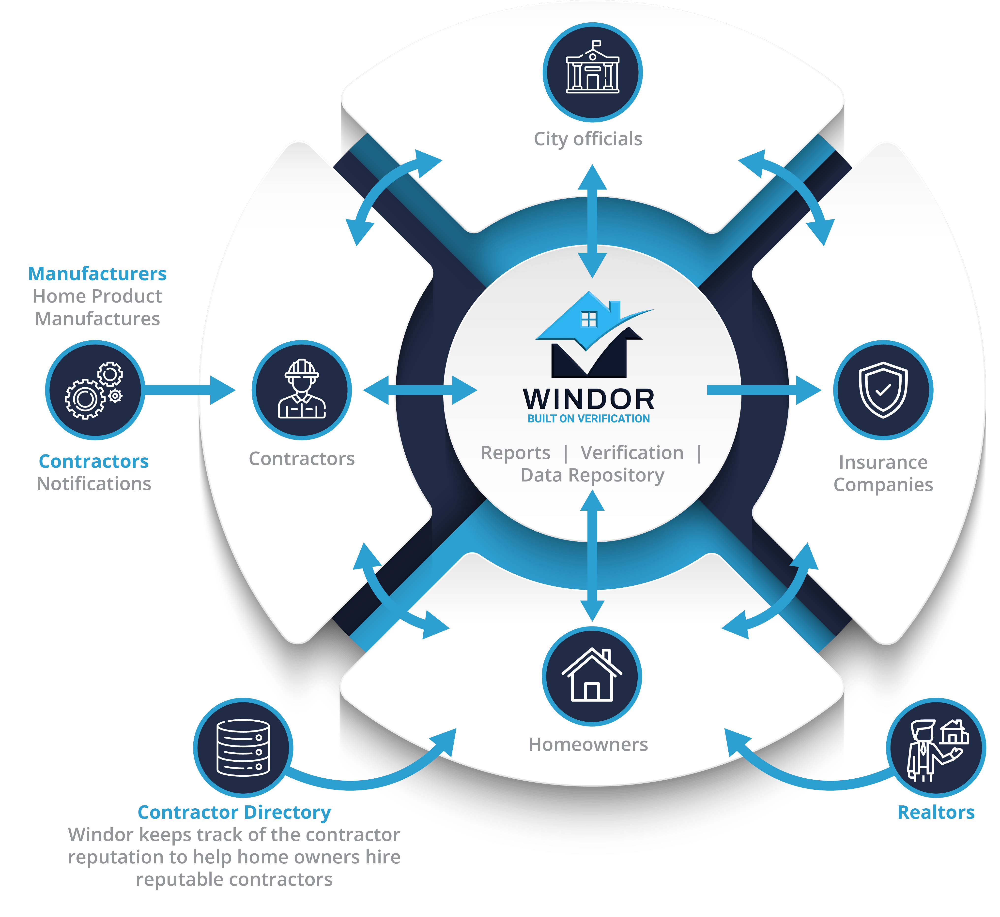

From discipline to determination, Frank Serna built his life on service and strength.
After serving as a Special Forces officer in the military, he returned home with a clear mission: provide a strong, secure future for his family.
With a natural work ethic and a background suited for hands-on challenges, Frank entered the construction industry. What began as a single company quickly grew into a network of successful businesses specializing in windows, doors, and home improvement solutions. But along the way, he saw a bigger problem—one that every contractor, homeowner, and regulator faced daily.
Information was scattered. Communication was fragmented. And critical details about homes were often lost over time.
Frank knew there had to be a better way.
In 2020, he took his first step toward solving this challenge by launching the initial version of Windor.app. The concept was simple but powerful: centralize home data so everyone involved—contractors, insurance providers, city officials, and homeowners—could access accurate, real-time information.
The results validated his vision.
Recognizing the need to scale, Frank partnered with Cazarin Interactive to build the next evolution of Windor—designed for growth, efficiency, and long-term impact.
Today, Windor is more than an app. It's a platform that transforms how homes are documented, maintained, and understood. Every repair, upgrade, and improvement becomes part of a permanent, accessible record.
Because a home isn't just a structure—it's a story.
And with Windor, every home finally has a voice.

With over 30+ years experience in the construction field and extensive knowledge in the insurance process. Our ramp up process is designed to empower your knowledge and understanding to the project at hand.
With over 30+ years experience in the construction field and extensive knowledge in the insurance process. Our ramp up process is designed to empower your knowledge and understanding to the project at hand.

At Windor, we simplify the verification process for contractors, city officials, and insurance providers by delivering clear inspections, accurate reporting, and dependable project oversight. Our goal is to help ensure projects are completed properly, funds are used responsibly, and every party involved has confidence in the outcome.
Our service includes a comprehensive consultation to identify project gaps, verify completed work, and provide detailed reporting that compares approved services against actual project completion. We help bring clarity, accountability, and direction to every stage of the process.
We begin by providing an easy to use Web Application to record your projects.
We store the information for each property and arrange it into easy to read reports. When the information is entered, photos are provided as well to verify the work and the specific manufactured products are installed.
We provide a comprehensive report outlining verified work, project status, and associated costs — giving contractors, municipalities, and insurance companies the information they need to make informed decisions.
Know and understand that project funds are being properly used — not simply collected. Windor provides independent verification that promotes transparency, protects investments, and helps ensure projects are completed to standard.
has been successfully providing property verification expertise to homeowners, insurance firms, contactors, mortgage firms and more… These directions have allowed property owners and others to protect themselves and save millions in costs on verified services and verifications.
approach is to support and assist our clients in understanding their product and project are valuable. This approach has allowed us to win acceptance with our clients and ensure they receive consistent and quality service that meets or exceeds their expectations.
Our company has a proven history or stability, financial strength and respect in the marketplace. We will be there when you need us. Generally, with our localized support network, our customers can receive faster and more accurate support on product availability and property verifications.
has a strong Service Provider Network based strategically throughout 5 states with continuous growth yearly. Our personnel have extensive experience in providing our services for virtually every type of property. Our SPN's consists only of tenured people with no less than 5 years experience in the field.